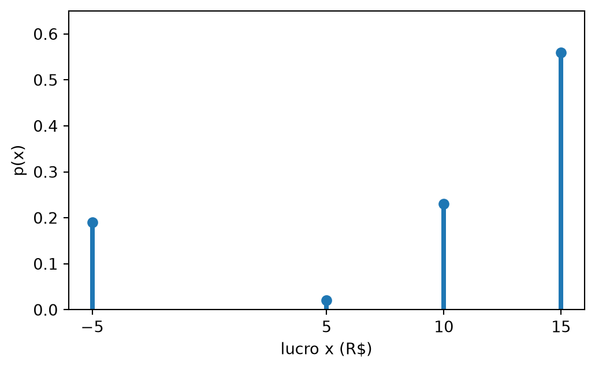

Variável Aleatória e Função de Probabilidade
Nota
Esta seção corresponde às seções 6.1 e 6.2 de Bussab e Morettin (2023).
No Capítulo 2, as perguntas eram sobre eventos: a carta sorteada é de copas? A resposta era sim ou não. Muitas perguntas práticas, porém, pedem um número: quanto dinheiro um produto vai dar, quantas peças defeituosas há num lote.
No Capítulo 1, esse tipo de pergunta tinha resposta nos dados: a média e a variância de uma variável quantitativa. Este capítulo constrói a versão teórica dessas ferramentas. Assim como a probabilidade foi o modelo da frequência relativa, a variável aleatória vai ser o modelo de uma variável quantitativa.
Do experimento ao número
Um empresário pretende montar um produto composto de dois componentes, um cilindro e uma esfera, comprados de fábricas diferentes (Exemplo 6.1 de Bussab e Morettin (2023)). Cada componente pode chegar bom (B), dentro das especificações; longo (L), maior que as especificações; ou curto (C), menor que as especificações. O histórico das fábricas dá as probabilidades:
| Estado do componente | Cilindro | Esfera |
|---|---|---|
| Bom (B) | 0,80 | 0,70 |
| Longo (L) | 0,10 | 0,20 |
| Curto (C) | 0,10 | 0,10 |
Os valores, em reais: cada componente custa 5, e o produto é vendido por 25. Um componente longo pode ser recuperado, a um custo adicional de 5. Se algum componente for curto, o conjunto é irrecuperável e é vendido como sucata por 5. A pergunta do empresário é: quanto ele lucra por unidade montada?
O experimento é receber os dois componentes. Um resultado é um par de letras, a primeira para o cilindro e a segunda para a esfera: BL quer dizer que o cilindro chegou bom e a esfera, longa. O espaço amostral tem \(3 \times 3 = 9\) pontos.
Como as fábricas são diferentes, é razoável supor que a qualidade de um componente não influencia a do outro. A probabilidade de cada par sai então da regra do produto para eventos independentes (seção 2.4):
\[ \begin{aligned} P(\text{BL}) &= P(\text{cilindro bom}) \\ &\quad \times P(\text{esfera longa}) \\ &= 0{,}80 \times 0{,}20 \\ &= 0{,}16. \end{aligned} \]
O lucro de cada ponto é a receita menos os custos. Em BB, o empresário recebe 25 e paga os dois componentes: \(25 - 5 - 5 = 15\). Em BL, paga também a recuperação da esfera: \(25 - 10 - 5 = 10\). Em LL, as duas recuperações: \(25 - 10 - 10 = 5\). Em qualquer ponto com C, recebe só os 5 da sucata e paga os dois componentes, sem recuperação: \(5 - 10 = -5\).
| Ponto \(\omega\) | \(P(\omega)\) | Lucro |
|---|---|---|
| BB | \(0{,}80 \times 0{,}70 = 0{,}56\) | 15 |
| BL | \(0{,}80 \times 0{,}20 = 0{,}16\) | 10 |
| BC | \(0{,}80 \times 0{,}10 = 0{,}08\) | \(-5\) |
| LB | \(0{,}10 \times 0{,}70 = 0{,}07\) | 10 |
| LL | \(0{,}10 \times 0{,}20 = 0{,}02\) | 5 |
| LC | \(0{,}10 \times 0{,}10 = 0{,}01\) | \(-5\) |
| CB | \(0{,}10 \times 0{,}70 = 0{,}07\) | \(-5\) |
| CL | \(0{,}10 \times 0{,}20 = 0{,}02\) | \(-5\) |
| CC | \(0{,}10 \times 0{,}10 = 0{,}01\) | \(-5\) |
| Total | 1 |
A coluna do lucro associa um número a cada ponto do espaço amostral. É isso que se chama variável aleatória.
Uma variável aleatória discreta é uma função \(X\) que associa a cada ponto amostral \(\omega \in \Omega\) um número real \(X(\omega)\), e cujos valores possíveis formam um conjunto que pode ser listado (finito ou infinito enumerável).
O “aleatório” do nome vem do experimento: antes de receber os componentes, não se sabe qual ponto de \(\Omega\) vai ocorrer, e por isso não se sabe o valor de \(X\). A função em si não tem nada de aleatório: \(X(\text{BL}) = 10\) sempre. A convenção é usar letra maiúscula para a variável (\(X\)) e minúscula para um valor que ela assume (\(x\)).
Função de probabilidade
O lucro \(X\) assume só quatro valores: 15, 10, 5 e \(-5\). Cada valor corresponde a um evento de \(\Omega\), formado pelos pontos com aquele lucro. \(X = 10\) ocorre nos pontos BL e LB, e como os pontos são resultados disjuntos, as probabilidades se somam:
\[ \begin{aligned} P(X = 10) &= P(\text{BL}) + P(\text{LB}) \\ &= 0{,}16 + 0{,}07 \\ &= 0{,}23. \end{aligned} \]
\(X = -5\) junta os cinco pontos com algum C:
\[ \begin{aligned} P(X = -5) &= P(\text{BC}) + P(\text{LC}) \\ &\quad + P(\text{CB}) + P(\text{CL}) \\ &\quad + P(\text{CC}) \\ &= 0{,}08 + 0{,}01 + 0{,}07 \\ &\quad + 0{,}02 + 0{,}01 \\ &= 0{,}19. \end{aligned} \]
Os valores 15 e 5 vêm de um ponto só cada: \(P(X = 15) = P(\text{BB}) = 0{,}56\) e \(P(X = 5) = P(\text{LL}) = 0{,}02\). O resultado é uma tabela com os valores de \(X\) e suas probabilidades:
| \(x\) (R$) | 15 | 10 | 5 | \(-5\) |
|---|---|---|---|---|
| \(p(x)\) | 0,56 | 0,23 | 0,02 | 0,19 |
A função de probabilidade da variável aleatória discreta \(X\) associa a cada valor \(x_i\) a sua probabilidade:
\[ p(x_i) = P(X = x_i), \quad i = 1, 2, \dots \]
Na fórmula, \(x_1, x_2, \dots\) são os valores que \(X\) pode assumir, e \(\{X = x_i\}\) é o evento formado por todos os pontos de \(\Omega\) em que \(X\) vale \(x_i\). As probabilidades \(p(x_i)\) são números entre 0 e 1 e somam 1, porque os eventos \(\{X = x_i\}\) são disjuntos e cobrem \(\Omega\). No lucro, \(0{,}56 + 0{,}23 + 0{,}02 + 0{,}19 = 1\).
O gráfico da função de probabilidade tem uma barra em cada valor possível, com altura igual à probabilidade. Entre os valores não há nada: \(X\) não assume 12 nem 7,5.
Com esse modelo, o empresário já sabe que a chance de prejuízo é \(P(X = -5) = 0{,}19\), quase uma unidade em cada cinco. Na seção 3.2, o mesmo modelo vai dizer quanto ele lucra em média.
ImportanteO modelo depende das suposições
A tabela de \(X\) só vale se as fábricas cumprirem as probabilidades do histórico e se a qualidade de um componente não influenciar a do outro. Se as duas fábricas compram a matéria-prima do mesmo fornecedor e um lote vem fora do padrão, os componentes tendem a sair com defeito juntos, e a probabilidade de prejuízo muda.
Várias variáveis no mesmo experimento
Um mesmo espaço amostral admite várias variáveis aleatórias. No experimento dos componentes, o encarregado da oficina não se importa com o lucro, mas com o custo de recuperação \(Y\): 0 se nenhum componente for longo, 5 se um for, 10 se os dois forem. Se algum componente for curto, nenhum é recuperado, porque o conjunto vai para a sucata.
Na Tabela 2, \(Y = 5\) nos pontos BL e LB, \(Y = 10\) em LL, e \(Y = 0\) em BB e nos cinco pontos com C. Somando as probabilidades:
\[ \begin{aligned} P(Y = 0) &= 0{,}56 + 0{,}19 = 0{,}75, \\ P(Y = 5) &= 0{,}16 + 0{,}07 = 0{,}23, \\ P(Y = 10) &= 0{,}02. \end{aligned} \]
Os pontos amostrais são os mesmos, e suas probabilidades também. O que muda é a função que transforma cada ponto em número, e com ela a função de probabilidade.
Outros experimentos também guardam variáveis aleatórias. Nas duas moedas da seção 2.1, o número de caras é uma variável \(W\) com valores 0, 1 e 2. Uma urna tem 5 bolas, 2 vermelhas e 3 brancas, e tiram-se duas, uma depois da outra, sem reposição; o número de bolas vermelhas entre as duas é uma variável \(V\) com valores 0, 1 e 2.
Pelo princípio multiplicativo (seção 2.3), há \(5 \times 4 = 20\) pares ordenados de bolas, todos com a mesma probabilidade. Basta contar os pares de cada tipo, com “v” para vermelha e “b” para branca:
| Par | Contagem | \(V\) |
|---|---|---|
| b, b | \(3 \times 2 = 6\) | 0 |
| v, b | \(2 \times 3 = 6\) | 1 |
| b, v | \(3 \times 2 = 6\) | 1 |
| v, v | \(2 \times 1 = 2\) | 2 |
| Total | 20 |
\(P(V = 0) = 6/20 = 3/10\), \(P(V = 1) = 12/20 = 6/10\) e \(P(V = 2) = 2/20 = 1/10\). O caso \(V = 1\) junta duas ordens, com a vermelha na primeira ou na segunda retirada.
Resumo
| Conceito | O que é |
|---|---|
| Variável aleatória \(X\) | função que dá um número a cada ponto de \(\Omega\) |
| Discreta | valores que podem ser listados |
| Função de probabilidade | \(p(x) = P(X = x)\), com \(\sum p(x_i) = 1\) |
Regra prática: para achar a função de probabilidade, liste os pontos de \(\Omega\) com suas probabilidades, calcule o valor de \(X\) em cada ponto e some as probabilidades dos pontos com o mesmo valor.
Exercícios
1. Lançam-se dois dados equilibrados, e \(S\) é a soma das faces. Encontre a função de probabilidade de \(S\). Qual o valor mais provável?
DicaResposta
Os 36 pares de faces são igualmente prováveis. \(S\) vai de 2 a 12, e cada probabilidade é o número de pares com aquela soma dividido por 36. Por exemplo, \(S = 4\) nos pares (1, 3), (2, 2) e (3, 1):
| \(s\) | 2 | 3 | 4 | 5 | 6 | 7 | 8 | 9 | 10 | 11 | 12 |
|---|---|---|---|---|---|---|---|---|---|---|---|
| pares | 1 | 2 | 3 | 4 | 5 | 6 | 5 | 4 | 3 | 2 | 1 |
A função de probabilidade é \(p(s) = (\text{pares})/36\): de 1/36 a 6/36 e de volta a 1/36, num total de \(36/36 = 1\). O valor mais provável é 7, com probabilidade \(6/36 = 1/6\).
2. Peças saem de uma linha de produção e são inspecionadas uma a uma, até aparecer a primeira defeituosa. Cada peça é defeituosa com probabilidade 0,1, independentemente das outras. Seja \(X\) o número de peças inspecionadas até a primeira defeituosa, contando a defeituosa. Encontre \(P(X = 1)\), \(P(X = 2)\) e \(P(X = k)\) para um \(k\) qualquer.
DicaResposta
\(X = k\) quando as \(k - 1\) primeiras peças são boas e a \(k\)-ésima é defeituosa. Pela independência, para \(k = 1, 2, 3, \dots\),
\[ P(X = k) = 0{,}9^{\,k-1} \times 0{,}1. \]
Então \(P(X = 1) = 0{,}1\) e \(P(X = 2) = 0{,}09\). \(X\) é uma variável discreta com infinitos valores possíveis, que podem ser listados.
3. No experimento dos componentes, seja \(Z\) o número de componentes curtos (0, 1 ou 2). Encontre a função de probabilidade de \(Z\).
DicaResposta
\(P(Z = 2) = 0{,}1 \times 0{,}1 = 0{,}01\). \(P(Z = 0) = 0{,}9 \times 0{,}9 = 0{,}81\), porque cada componente deixa de ser curto com probabilidade 0,9. \(P(Z = 1) = 1 - 0{,}81 - 0{,}01 = 0{,}18\).
Bussab, Wilton de Oliveira, e Pedro Alberto Morettin. 2023. Estatística Básica. 10ª ed. Saraiva.